دليل المستخدم الشامل
نظام الصادر والوارد والداخلي
1) تسجيل الدخول
- افتح رابط النظام من رسالة الدعوة أو من متصفحك على شبكة الجهة.
- أدخل البريد الإلكتروني (هو اسم الدخول).
- أدخل كلمة المرور.
- اضغط دخول.
- يُفضّل من ملفي الشخصي تغيير كلمة المرور في أول دخول.
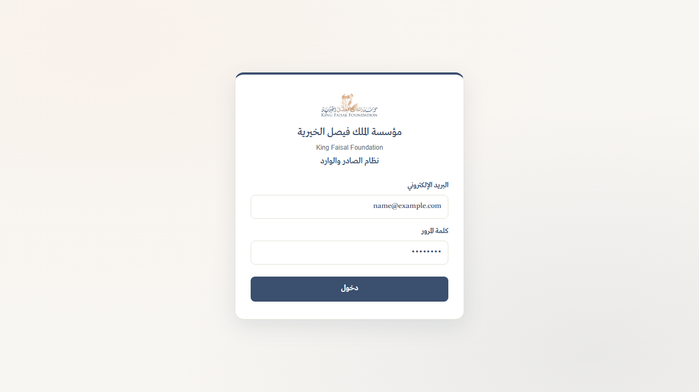
نسيت كلمة المرور؟ استخدم رابط «نسيت كلمة المرور؟» أسفل حقل كلمة المرور واتبع تعليمات البريد.
2) الشريط العلوي
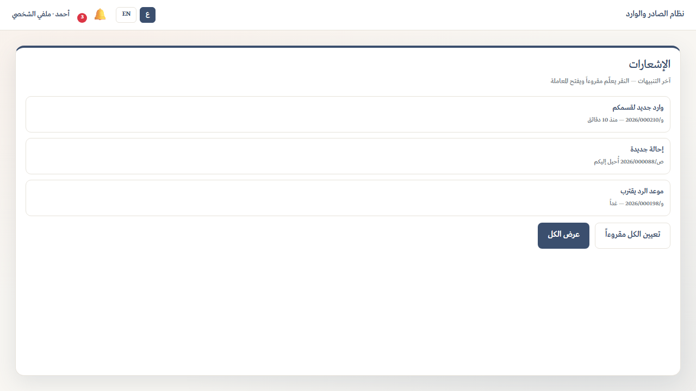
- ع / EN — تبديل لغة الواجهة فوراً (عربي أو إنجليزي).
- جرس الإشعارات — تنبيهات مثل: وارد جديد، إحالة جديدة، اقتراب موعد الرد. النقر يعلّم الإشعار مقروءاً ويفتح المعاملة.
- من قائمة الإشعارات يمكن عرض الكل أو تعيين الكل مقروءاً.
- اسمك / صورتك — الوصول السريع إلى ملفي الشخصي وخروج.
راجع الجرس يومياً مع قائمة «يحتاج إجراء» حتى لا يفوتك موعد رد أو إحالة.
3) الصفحة الرئيسية
بعد الدخول تظهر لوحة ملخص لعمل يومك:
- إحصاءات الصادر والوارد والداخلي (إن ظهرت لك)
- بطاقات يحتاج إجراء وآخر المعاملات والمتأخر لكل نوع ظاهر
- روابط سريعة: تعاميم، إحالات، أرشيف، تقارير، مرفقات
- زر سريع داخلي جديد عند توفر الصلاحية
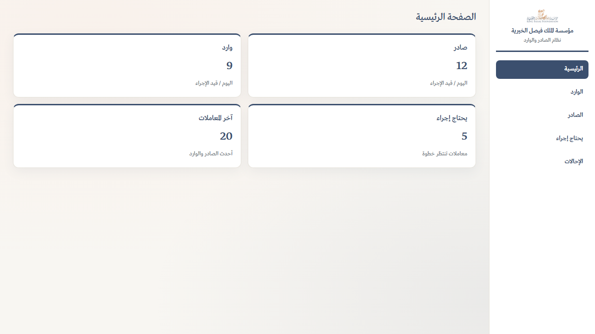
تظهر لك المعاملات حسب القسم والصلاحيات المسندة لحسابك.
5) البحث والفلترة في القوائم
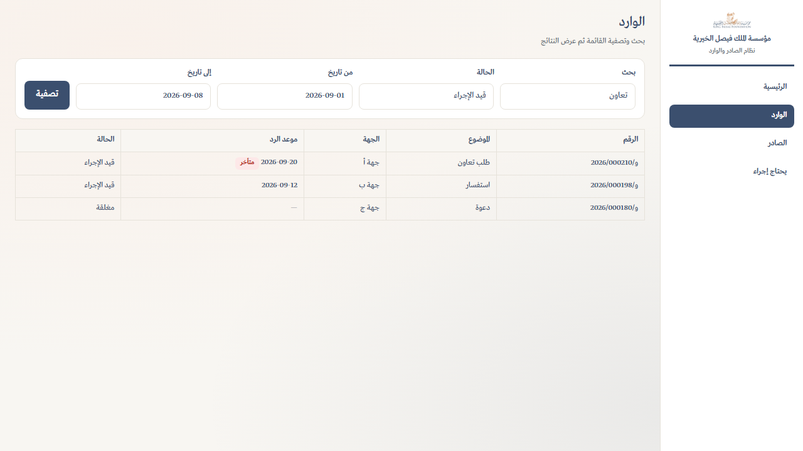
من الوارد أو الصادر أو المعاملات الداخلية استخدم شريط التصفية ثم اضغط زر العرض/التصفية:
| الفلتر | المعنى |
|---|---|
| بحث | رقم المعاملة أو الموضوع أو الجهة |
| الحالة | مثل: جديدة، قيد الإجراء، مغلقة… |
| يحتاج متابعة | ما ينتظر إجراءً |
| القسم | إن ظهر حسب صلاحيتك |
| الفترة | من/إلى تاريخ (ميلادي أو هجري) |
| الاستلام (صادر) | بدون استلام / تم التسجيل / متأخر بلا استلام |
- في الوارد تظهر أعمدة موعد الرد والمتأخر وشارة المرفق.
- في الصادر قد يظهر تنبيه أعلى الصفحة عند وجود صادر متأخر بلا استلام.
- تصدير Excel للقوائم الكاملة من صفحة التقارير (وليس من قائمة الوارد/الصادر).
6) الصادر (مفرد)
إنشاء صادر جديد
- من القائمة: الصادر ← صادر جديد.
- اكتب الموضوع.
- اختر الجهة المستلمة من جهات المراسلة.
- راجع القسم / جهة التوقيع والتاريخ والأولوية والسرية.
- أرفق ملفاً إن لزم، ثم احفظ.
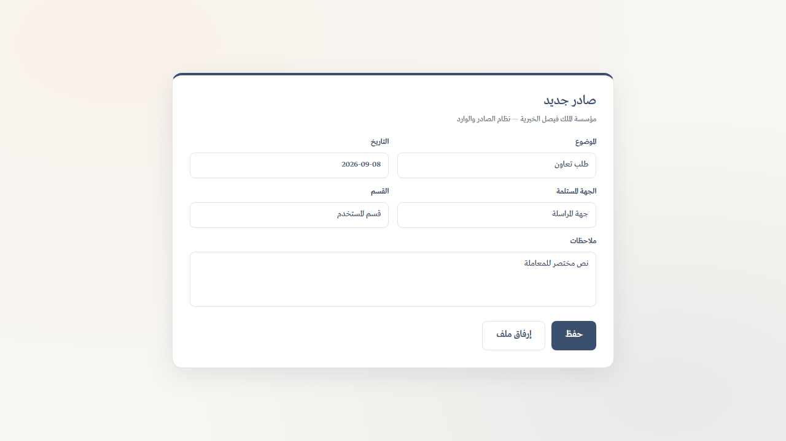
بعد الحفظ يُمنح الصادر رقماً تلقائياً (مثل: ص/2026/000001) مع إمكانية الطباعة والإرسال.
من صفحة عرض الصادر يمكنك
- تعديل البيانات (حسب الصلاحية وحالة المعاملة)
- رفع المرفقات، التعليقات، الإحالة
- الإرسال بالبريد أو واتساب
- تسجيل الاستلام / سند التسليم
- ربط بوارد إن كان الصادر رداً على وارد مسجّل
- قائمة طباعة (نموذج التسليم / ملصق الظرف / ملصق حراري)
- إقفال المعاملة، وإلغاء / سحب إن لزم
- على الجوال: الأزرار الثانوية خلف المزيد
- عرض الدفعة إن كان جزءاً من صادر جماعي
يمكن إدخال «مرجع وارد» كنص خارجي دون ربط تلقائي بسجل وارد في النظام.
المراجعة والاعتماد قبل الإصدار
إذا فعّل مدير النظام موافقة الصادر، لا يُطبع الصادر ولا يُرسل قبل اعتماده. وإذا فعّل مرحلة المراجعة، يمرّ الصادر بالمراجعة أولاً.
- من صفحة عرض الصادر اضغط إرسال للمراجعة (أو طلب موافقة الإصدار إن كانت المراجعة غير مفعّلة).
- يصل الصادر إلى المراجع الأول، ويظهر عنده في «يحتاج إجراء» ← يحتاج مراجعة. إذا انتهت مهلته دون قرار يُحوَّل إلى المراجع الثاني.
- يختار المراجع مطابقة — إحالة للاعتماد فينتقل الصادر إلى المعتمد الأول، أو إعادة بملاحظات فيرجع إليك للتصحيح ثم تضغط إعادة الإرسال للمراجعة.
- بعد المراجعة يعتمد المعتمدون بالتسلسل (الأول، ثم الثاني بعد مهلته، ثم الثالث بسبب إلزامي)، ثم يصبح الصادر جاهزاً للإصدار.
ما يُراجَع: البيانات، والجهة، والمرفقات، والصيغة.
قرارات المراجع: مطابقة ← بانتظار الاعتماد، أو إعادة بملاحظات ← المسودة.
الضوابط:
- المراجعة للشكل والإجراء فقط، والمضمون والقرار للمعتمد.
- الإعادة تكون بملاحظات مكتوبة إلزامية.
- من أعدّ المعاملة لا يراجعها، ومن راجعها لا يعتمدها.
- أي تعديل بعد المراجعة يعيد المعاملة للمراجعة.
- تعمل المراجعة ضمن مسار موافقة الإصدار، فيلزم تفعيله وتحديد المعتمد الأول.
- إن لم يوجد مراجع مؤهَّل (غير المُعِدّ) تنتقل المعاملة مباشرة إلى المعتمد الأول.
يحدد مدير النظام المراجع الأول والثاني والمهلة من الإعدادات ← الصادر. إن تُركا فارغين يراجع أي مستخدم من «الاتصالات الإدارية».
7) صادر جماعي
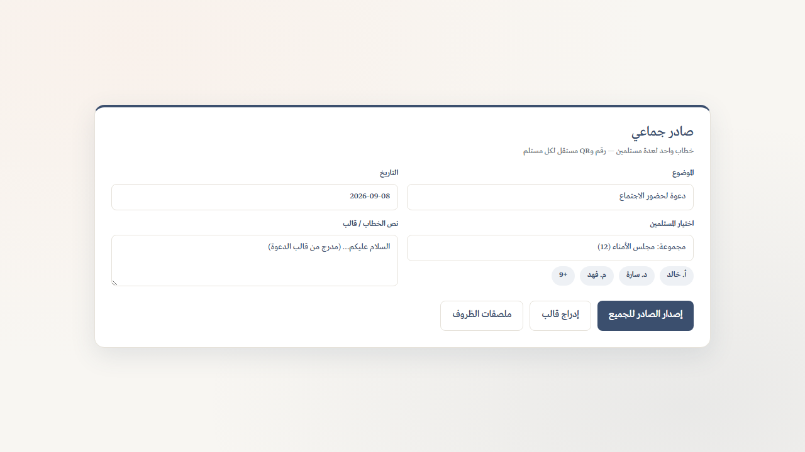
لإرسال خطاب واحد لعدة مستلمين دفعة واحدة (كل مستلم يحصل على رقم صادر وQR مستقل).
- من الصادر اختر صادر جماعي.
- اكتب الموضوع واختر المستلمين (من مجموعة جهات أو يدوياً) — حد أدنى مستلمَين تقريباً وحتى حد أقصى للنظام.
- حدد التاريخ والقسم والأولوية والسرية.
- اختياري: نص الخطاب أو إدراج قالب.
- أكّد إصدار الصادر للجميع.
من صفحة نتائج الدفعة
- إرسال بريد / واتساب / تسجيل التسليم (مجموعة إرسال)
- قائمة طباعة: نموذج التسليم، الخطابات، الملصقات، حراري، كشف المرسل إليهم
- تصدير Word/CSV من الشريط أو من المزيد على الجوال
تأكد من صحة جوال وبريد الجهات قبل الإرسال الجماعي. المعاملة الملغاة لا تُطبع ضمن طباعة الخطابات.
8) الوارد
تسجيل وارد جديد
- الوارد ← وارد جديد.
- أدخل الموضوع وتاريخ الاستلام.
- اختر الجهة المرسلة (أو اكتب الاسم يدوياً).
- أدخل رقم خطاب الجهة: رقمهم الخارجي على الخطاب.
- اختياري: ربط بصادر — ابحث عن صادر سابق واربطه.
- حدد القسم وموعد الرد والأولوية/السرية عند الحاجة.
- المرفق اختياري عند الحفظ (مثلاً ظرف مغلق) — يمكن رفع المسح لاحقاً من صفحة العرض.
| الحقل | المعنى |
|---|---|
| الجهة المرسلة | من أرسل الخطاب إليكم |
| رقم خطاب الجهة | رقمهم الخارجي على الورقة |
| ربط بصادر | ربط اختياري بصادر مسجّل |
| موعد الرد | آخر موعد متوقع للرد |
| رقم الوارد | يُنشأ تلقائياً بعد الحفظ |
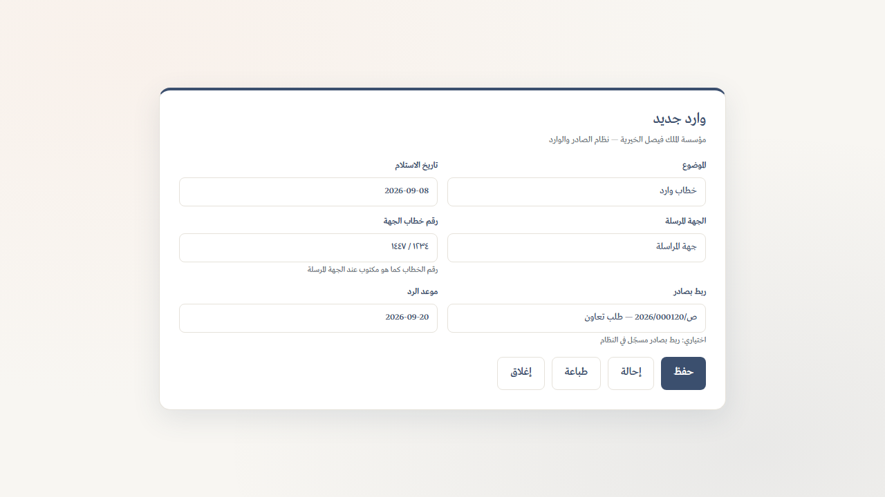
ربط بصادر
- من حقل ربط بصادر اضغط للبحث.
- ابحث برقم الصادر أو الموضوع أو الجهة واختر السجل.
- يمكن مسح الربط لاحقاً إن أُنشئ بالخطأ.
متابعة الوارد بعد الحفظ
- رفع المرفقات / المسح
- الإحالة، التعليقات، ورقة العرض
- إنشاء رد (صادر مرتبط بهذا الوارد)
- قائمة طباعة (نموذج الاستلام / ملصق الظرف / ملصق حراري) حتى الإغلاق
9) المعاملات الداخلية
لمراسلات بين الأقسام داخل الجهة (ليست جهة خارجية). عند الحفظ تُنشأ إحالة تلقائية للقسم المستلم.
إنشاء معاملة داخلية
- المعاملات الداخلية ← معاملة داخلية جديدة (أو من الرئيسية: داخلي جديد).
- أدخل الموضوع.
- حدّد المسار: من قسم → إلى قسم (لا يجوز أن يكونا نفس القسم).
- التاريخ، موعد الرد إن لزم، الأولوية والسرية، وملاحظات اختيارية.
- أرفق ملفاً اختياريًا ثم حفظ وإحالة.
- يُمنح رقماً تلقائياً ببادئة الداخلي (مثل: د/2026/…) وتُحال للقسم المستلم.
القائمة والعرض
- القائمة: الرقم، الموضوع، من → إلى، التاريخ، موعد الرد، القسم المستلم، الحالة.
- من العرض: قائمة طباعة (نموذج التسليم / ملصق الظرف / ملصق حراري)، ورقة عرض، مرفقات، تعليقات، إحالات، تغيير الحالة، إقفال.
- على الجوال: الأزرار الثانوية خلف المزيد؛ والإجراءات الحساسة (إقفال / تعديل) في مجموعة منفصلة.
- أسماء مديري الأقسام (الموجّه من / إلى) تُحفظ مع المعاملة عند الإنشاء؛ تعديل بطاقة القسم لاحقاً لا يغيّر المعاملات القديمة.
- لا تعديل بعد الإنشاء من الواجهة، ولا إلغاء/سحب (خاص بالصادر).
| داخلي | وارد | صادر | |
|---|---|---|---|
| الطرف | قسم → قسم | جهة خارجية | جهة خارجية |
| عند الحفظ | إحالة تلقائية | تسجيل وارد | إعداد/إرسال |
| ورقة العرض | نعم | نعم | لا |
| ملصق الظرف | بيانات القسم المستلم | من الجهة | إلى الجهة |
| ملصق حراري | رقم + تواريخ + QR | نفس المحتوى | نفس المحتوى |
| إلغاء/سحب | لا | لا | نعم |
قد يُخفى بند المعاملات الداخلية من الشريط الجانبي إذا أخفاه المدير من إدارة القائمة الجانبية (إخفاء عام للجميع)، أو إذا أُلغي ظهوره لبعض الأدوار من تعديل العنصر.
10) الأولوية والسرية
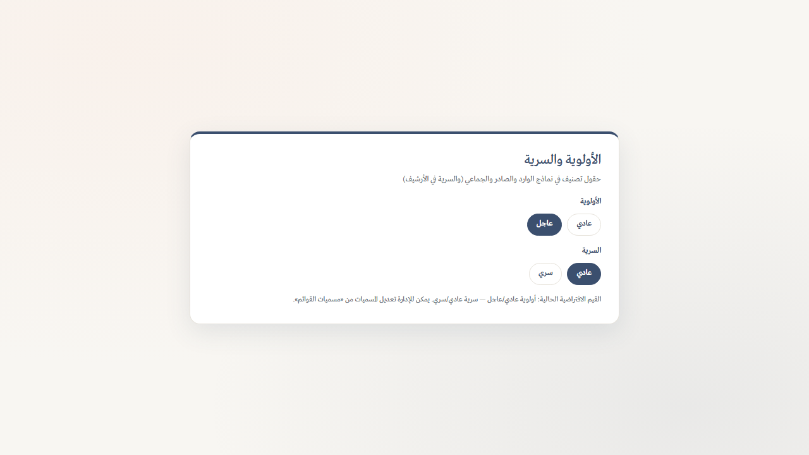
تظهر في نماذج الوارد والصادر والداخلي والصادر الجماعي (والسرية أيضاً في الأرشيف):
- الأولوية (افتراضي): عادي / عاجل
- السرية (افتراضي): عادي / سري
القيم أعلاه هي الافتراضية الحالية في النظام. يمكن للإدارة تعديلها أو إضافة بنود من مسميات القوائم. المعاملات القديمة قد تحتفظ بقيم أُزيلت من القائمة.
11) المرفقات ومرفقات المعاملات
الرفع من المعاملة
- افتح الوارد أو الصادر أو الداخلي.
- من قسم المرفقات اختر PDF أو صورة وارفع.
- احذف المرفق الخاطئ بعد التأكيد (حسب صلاحيتك).
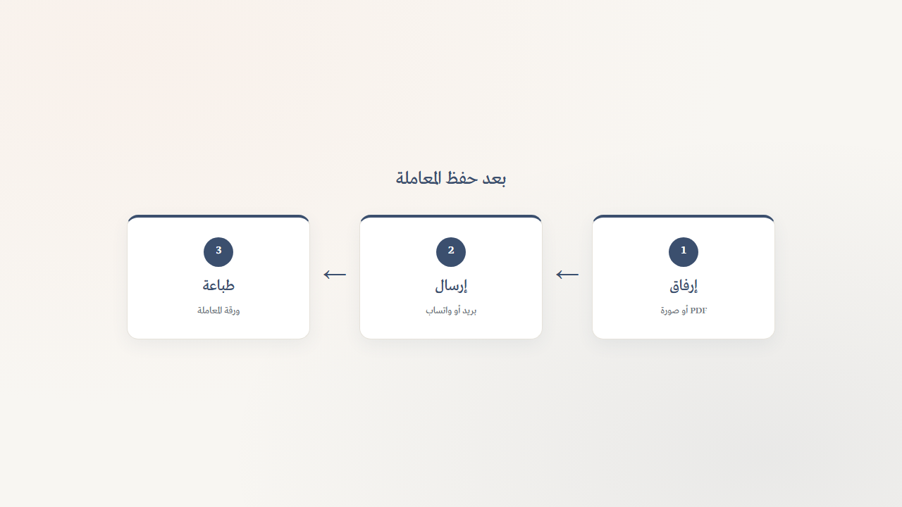
قائمة مرفقات المعاملات
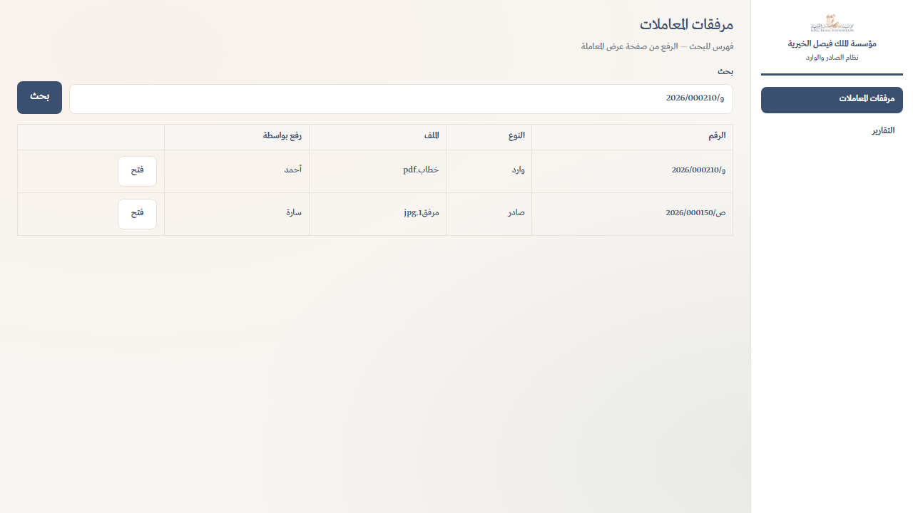
- من القائمة: مرفقات المعاملات.
- ابحث باسم الملف أو رقم المعاملة ثم افتح الملف أو انتقل للمعاملة.
هذه الصفحة للفهرسة والبحث فقط — الرفع يتم من صفحة عرض المعاملة.
12) إرسال الصادر
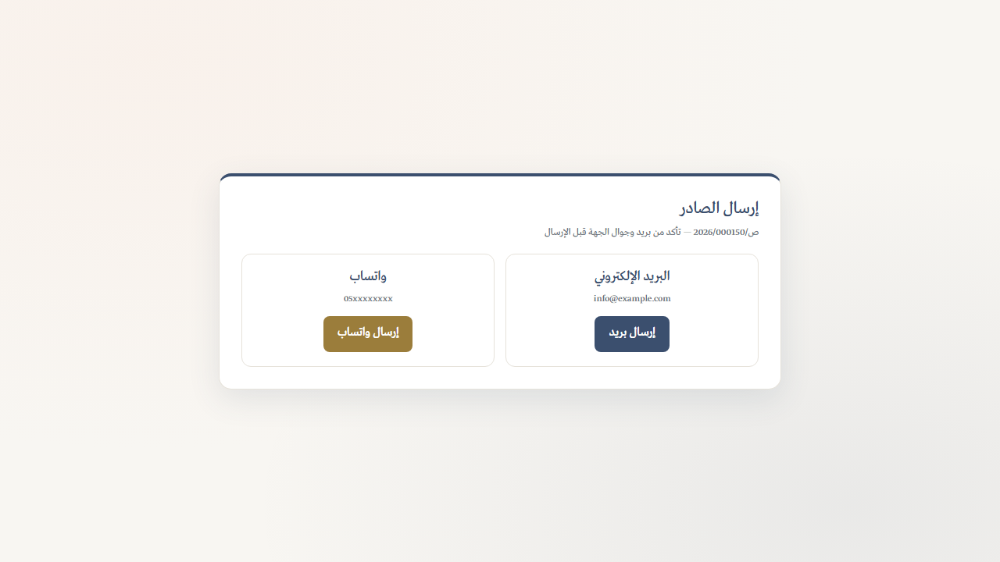
- تأكد أن بطاقة الجهة تحوي بريداً أو جوالاً صحيحاً قبل الإرسال.
- في الصادر الجماعي يمكن إرسال المحددين دفعة واحدة من صفحة النتائج.
إن فشل الإرسال تحقق من بيانات الجهة أو تواصل مع مدير النظام بخصوص إعدادات البريد/واتساب.
13) تسجيل استلام الصادر
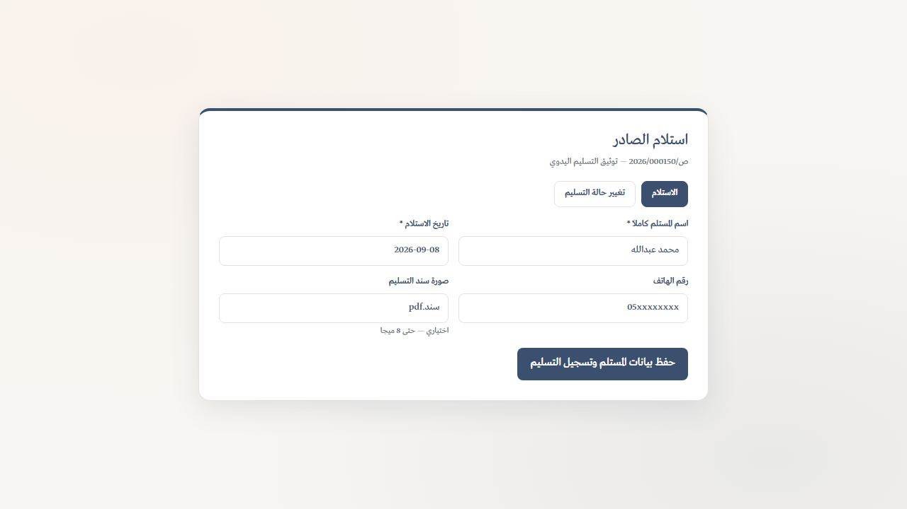
بعد التسليم اليدوي (أو عند الحاجة لتوثيق الاستلام):
- افتح الصادر ← بطاقة استلام الصادر.
- أدخل اسم المستلم كاملاً وتاريخ الاستلام ورقم الهاتف إن وُجد.
- اختياري: أرفق صورة سند التسليم.
- احفظ — تُسجَّل حالة التسليم تلقائياً.
يمكن تصحيح حالة التسليم إدارياً من التبويب المخصص دون إدخال مستلم. رفع سند جديد يستبدل السابق.
14) الإحالة
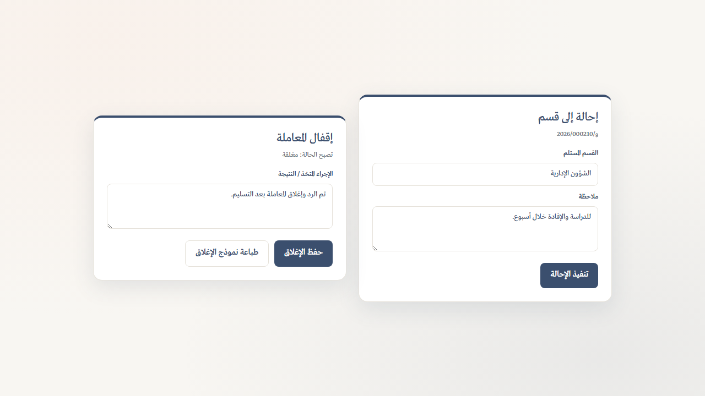
- افتح المعاملة ← إحالة إلى قسم.
- حدد القسم المستلم وأضف ملاحظة إن لزم.
- نفّذ الإحالة وتابع من قائمة الإحالات.
القسم المحال إليه يرى المعاملة ضمن نطاقه ويصله إشعار عادة.
16) ورقة العرض (وارد وداخلي)
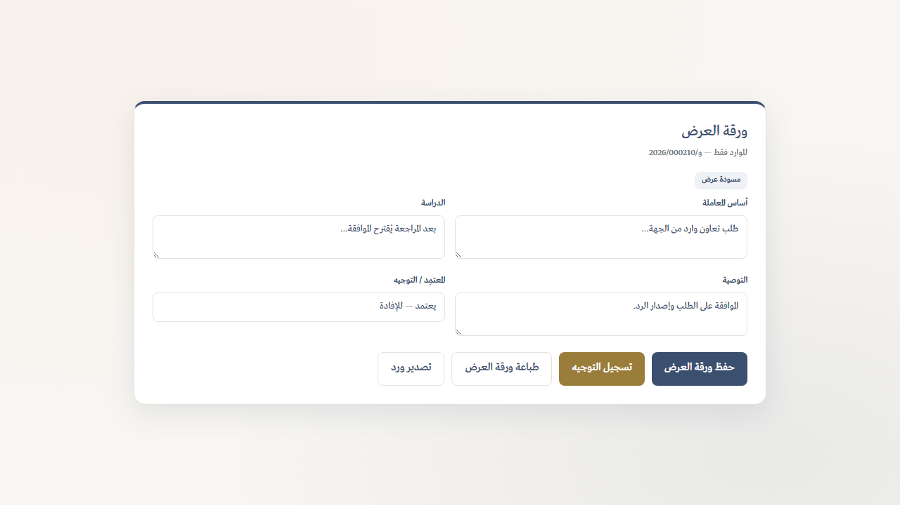
من عرض الوارد أو الداخلي: إنشاء ورقة عرض.
- عبّئ الترويسة، أساس المعاملة، الدراسة، التوصية، خيارات التوجيه، المعتمِد.
- احفظ ورقة العرض.
- عند الاعتماد: تسجيل التوجيه (تُقفل الورقة كـ «مُؤشَّر عليها»).
- طباعة ورقة العرض أو تصدير ورد.
ورقة العرض لا تغيّر رقم المعاملة ولا حالتها الإدارية. الحالات: مسودة عرض / مُؤشَّر عليها. غير متاحة للصادر.
17) الطباعة وملصق الظرف والملصق الحراري ورمز QR
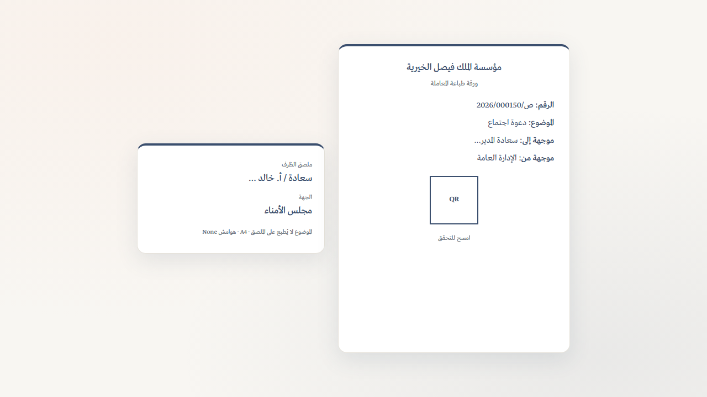
شريط أزرار صفحة العرض
- رجوع وطباعة ▾ ظاهران دائماً.
- قائمة طباعة تضم: نموذج التسليم/الاستلام، ملصق الظرف، والملصق الحراري (ونموذج الإقفال عند الحاجة).
- على الجوال: باقي الأزرار خلف المزيد.
- الإجراءات الحساسة (إقفال / إلغاء / تعديل) في مجموعة منفصلة بلون أوضح.
- بجانب العنوان تظهر شارة الحالة (مثل مقفلة / ملغاة / محالة).
طباعة المعاملة
- من صفحة العرض افتح قائمة طباعة.
- اختر طباعة نموذج التسليم (صادر/داخلي) أو طباعة نموذج الاستلام (وارد).
- راجع الرقم والموضوع وموجهة إلى/من وQR إن وُجد.
- اختر ورق مناسباً (غالباً A4) في نافذة الطباعة.
ملصق الظرف (ستيكرز)
- من قائمة طباعة → ملصق الظرف (وارد أو صادر أو داخلي، أو من نتائج الدفعة).
- اختر قالب الورقة (Letter 8.5×11): 10 ملصقات (2×5) أو 8 (2×4) أو ملصق كبير.
- حدّد البدء من الملصق لاستكمال ورقة مستخدمة جزئياً.
- عدد النسخ يكرر الملصق في الخانات التالية على نفس الورقة فقط ثم اضغط تطبيق.
- اضبط عند الحاجة: نوع الخط (ينعكس على الاسم والتاريخ ورقم المعاملة) وحجم الحقول % (لقب، اسم، وظيفة، جهة العمل/قسم).
- اطبع بورق Letter؛ الهوامش مضمّنة في القالب (مثل 12 مم أعلى/أسفل و5 مم يمين/يسار و2 مم بين العمودين للقالب 2×5).
الموضوع لا يُطبع على الملصق. في الداخلي تظهر بيانات القسم المستلم. غير متاح للمعاملة الملغاة.
ملصق حراري (حفظ فيزيائي)
لوضع رقم المعاملة على الملف الورقي — ليس ملصق الظرف. من قائمة طباعة اختر طباعة ملصق حراري.
- اختر القالب: 50×25 ملم أو 44×22 ملم.
- حدّد عدد النسخ (1–20). كل نسخة صفحة مستقلة بمقاس الملصق.
- طباعة — في نافذة الطابعة اختر المقاس المطابق للملصق.
المحتوى: رقم المعاملة، التاريخ الهجري ثم الميلادي، وQR. لا يُطبع النوع ولا الموضوع.
رمز QR على الصفحة
- من لوحة QR: نسخ الرقم، نسخ QR، تنزيل QR للتحقق الخارجي.
18) إلغاء / سحب الصادر
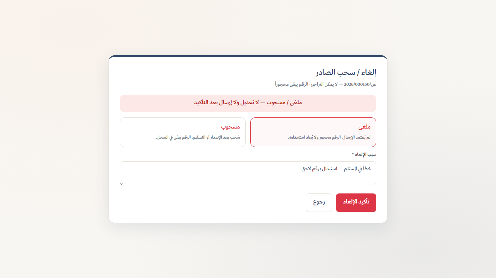
من عرض الصادر (غير الملغى مسبقاً) اختر إلغاء / سحب عند الحاجة لوقف المعاملة.
| النوع | متى؟ |
|---|---|
| ملغى | لم يُعتمد الإرسال — الرقم يبقى محجوزاً ولا يُعاد استخدامه |
| مسحوب | سُحب بعد الإصدار أو التسليم — الرقم يبقى في السجل |
- اختر النوع (ملغى أو مسحوب).
- اكتب سبب الإلغاء (مطلوب).
- أكّد — لا يمكن التراجع.
بعد التأكيد: لا تعديل ولا إرسال. صفحة التحقق تظهر المعاملة غير سارية. في الصادر الجماعي لا تُطبع الخطابات الملغاة ضمن طباعة الدفعة. غير متاح للوارد أو الداخلي.
19) إغلاق المعاملة
- افتح إقفال المعاملة.
- اكتب الإجراء المتخذ والنتيجة، وأرفق مستندات الإغلاق إن لزم.
- احفظ — تصبح الحالة مغلقة.
- يمكن طباعة نموذج إغلاق المعاملة من قائمة طباعة أو من شريط الإجراءات.
بعد الإقفال يظهر في صفحة العرض ملخص الإقفال (نص مختصر) مع رابط نصي عرض التفاصيل لفتح نموذج الإقفال. تأكد من اكتمال الرد/التسليم قبل الإغلاق. ينطبق على الوارد والصادر والداخلي حسب الصلاحية.
20) يحتاج إجراء
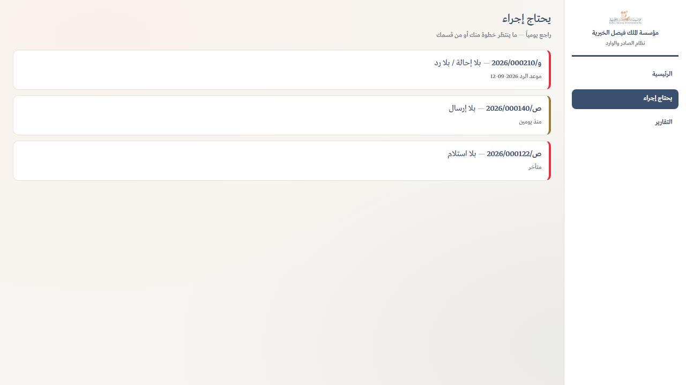
هذه الصفحة ليست إقفالاً جماعياً. راجعها يومياً: المعاملة تظهر لأن خطوة ناقصة، وتخرج عندما تُستكمل تلك الخطوة أو عندما تُقفل / تُلغى.
للإقفال الرسمي من بطاقة المعاملة: إقفال المعاملة ← اكتب الإجراء المتخذ واختر النتيجة (منتهية / تم التنفيذ / للحفظ) ← أكّد. الحالة تصبح مغلقة فتخرج من كل القوائم.
| القائمة | الإجراء المتبع | أو الإقفال |
|---|---|---|
| وارد بلا إحالة | أنشئ إحالة من بطاقة الوارد، أو غيّر الحالة من «جديدة / قيد الإجراء» | إقفال المعاملة |
| وارد بلا رد صادر | أنشئ رداً صادراً مربوطاً بهذا الوارد، أو اربط صادراً قائماً | إقفال أو وصول الحالة إلى «تم الرد» |
| وارد بلا مسح | ارفع المسح / المرفق من بطاقة الوارد | إقفال أو إخراجها من الحالات المفتوحة |
| صادر بلا إرسال | أرسل الخطاب (بريد / واتساب / تسجيل إرسال) | إقفال أو تسليم أو إلغاء |
| صادر بلا استلام | سجّل الاستلام (الاسم والتاريخ) بعد مدة التنبيه (افتراضي 7 أيام) | إقفال أو تسليم أو إلغاء |
| داخلي معلّق | أكمل مسارها؛ تخرج عند: تم الرد / تم التسليم / مغلقة / ملغاة | الإقفال هو المسار المعتاد |
| داخلي بلا مسح | ارفع المرفق | إقفال أو إخراجها من الحالات المفتوحة |
| موعد رد قريب | أنجز الرد أو التسليم (الموعد خلال اليوم أو يومين) | إقفال / إلغاء / تسوية الحالة |
المعاملة الواحدة قد تظهر في أكثر من قائمة. يكفي علاج السبب، أو الإقفال لإخراجها من الكل.
21) التقارير
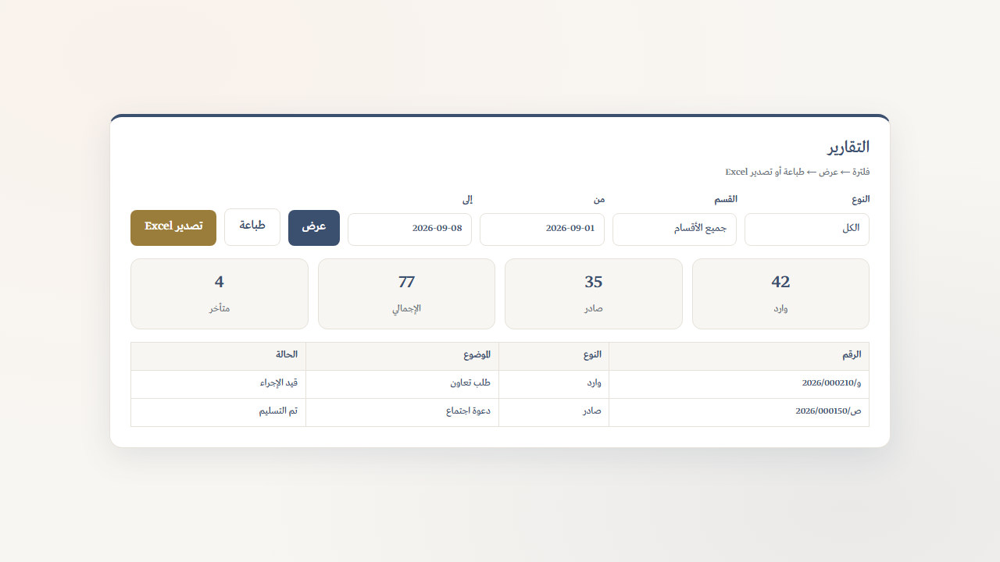
من القائمة: التقارير — ملخص وإحصاءات الصادر والوارد والداخلي خلال فترة تختارها.
الفلترة
- النوع: الكل / وارد / صادر / داخلي.
- القسم (حسب صلاحيتك).
- من تاريخ — إلى تاريخ.
- اضغط عرض.
بعد العرض: بطاقات إحصائية، توزيع حسب الحالة والقسم، وجدول التفاصيل.
الطباعة
- طبّق الفلترة ← طباعة ← طابعة أو حفظ PDF.
الطباعة قد تقتصر على عدد محدود من السجلات. للقائمة الكاملة استخدم Excel.
تصدير Excel
- نفس الفلاتر ← تصدير Excel.
- الملف يحوي: الرقم، النوع، الموضوع، الجهة، التاريخ، موعد الرد، الحالة، القسم.
22) التعاميم
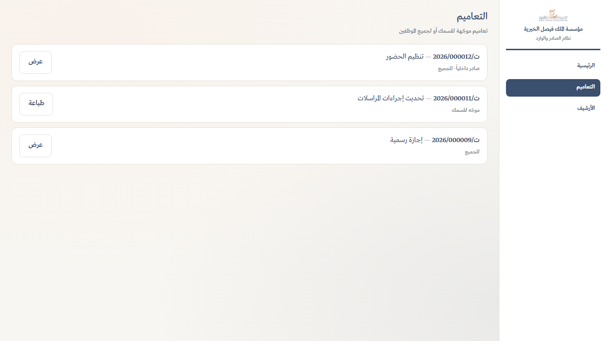
لمشرف القسم
- من التعاميم استعرض التعاميم الصادرة الموجّهة لقسمك أو للجميع.
- افتح للعرض والمرفقات والطباعة.
لمشرف الأرشيف (أو من لديه صلاحية الإصدار)
- تعميم جديد → حفظ مسودة أو إصدار داخلياً.
- ارفع مرفقاً (PDF/صورة) قبل الإصدار عند الطلب.
- حدد الجمهور: جميع الموظفين أو أقسام محددة.
التعميم مستقل عن مسار الصادر/الوارد/الداخلي. بعد الإصدار يُقفل الرقم والموضوع والجمهور عادة.
23) أرشيف الوثائق
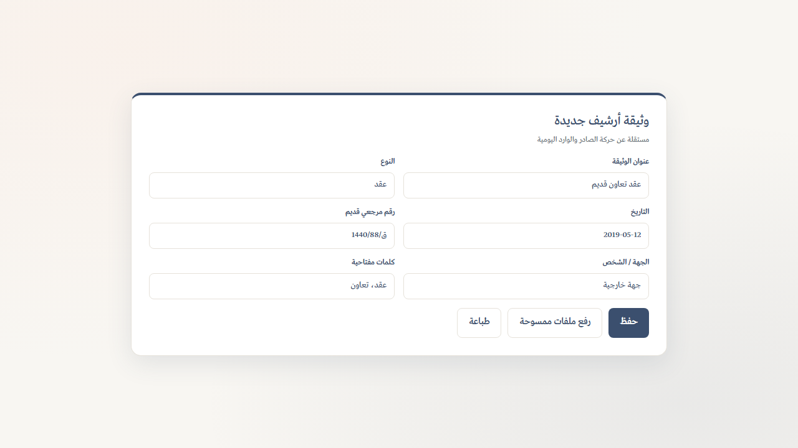
لحفظ وثائق تاريخية مستقلة عن حركة الصادر/الوارد اليومية.
- أرشيف الوثائق ← وثيقة جديدة.
- أدخل العنوان والنوع والتاريخ والجهة/الشخص ورقم مرجعي قديم وكلمات مفتاحية.
- اختياري: ربط بمعاملة، السرية، القسم.
- ارفع الملفات الممسوحة ثم احفظ.
- لاحقاً: تعديل، رفع ملفات إضافية، بحث، طباعة.
أنواع شائعة: خطاب قديم، مراسلة، إيصال، عقد، قرار… القسم يرى نطاق قسمه. الحذف غالباً للأدوار العليا.
24) جهات المراسلة
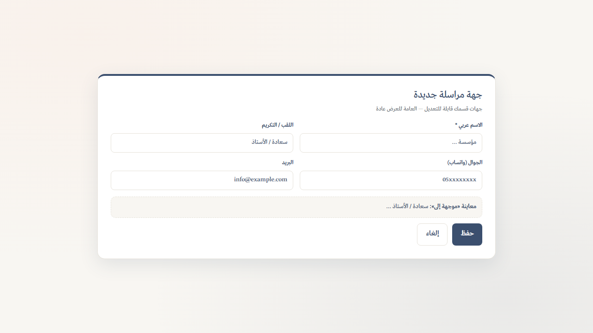
- من جهات المراسلة ← جهة جديدة (لجهات قسمك).
- الاسم عربي مطلوب؛ أضف اللقب والتكريم والوظيفة والجوال والبريد والعنوان.
- احفظ ثم استخدم الجهة في الوارد/الصادر/الجماعي.
- الجهات العامة للعرض والاستخدام عادةً (يديرها المسؤول).
- جهات قسمك قابلة للتعديل من حسابك إن رُبط بقسم.
- لا تحذف جهة مرتبطة بمعاملات — عطّلها إن لزم.
تعديل بطاقة الجهة يُطبَّق على المعاملات الجديدة فقط؛ المعاملات السابقة تبقى بالأسماء كما حُفظت وقت إنشائها. راجع الجوال والبريد قبل الإرسال.
25) مجموعات الجهات
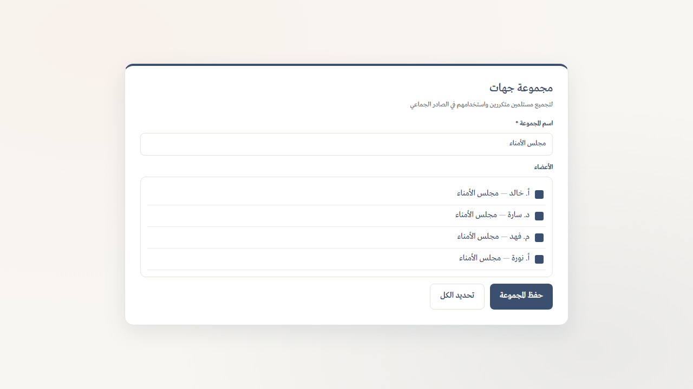
لتجميع مستلمين متكررين (مثل مجلس أو لجنة) واستخدامهم في الصادر الجماعي.
- مجموعات الجهات ← مجموعة جديدة.
- اسم المجموعة ← اختيار الأعضاء (بحث / تحديد الكل).
- احفظ. عدّل أو احذف مجموعات قسمك لاحقاً.
يلزم ربط الحساب بقسم. المجموعات العامة قد تظهر للاستخدام دون تعديلها.
26) قوالب الخطاب
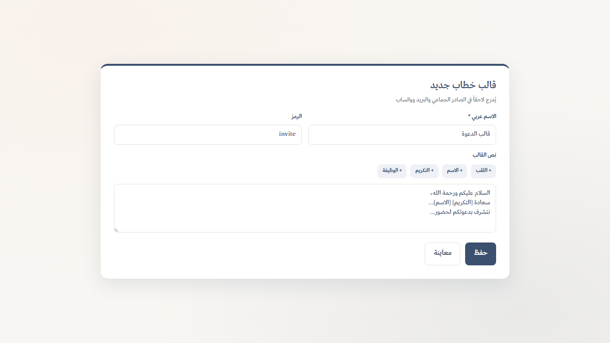
- قوالب الخطاب ← قالب جديد.
- الاسم ونص القالب (عربي/إنجليزي) مع إمكانية إدراج حقول المستلم (لقب، اسم، تكريم…).
- معاينة ثم حفظ.
- لاحقاً: إدراج قالب من الصادر الجماعي أو شاشات الخطاب ذات الصلة.
النص قد يظهر في البريد وواتساب والطباعة وصفحة التحقق حسب إعداد الإرسال.
27) التحقق بـ QR (للمستلم / الزائر)
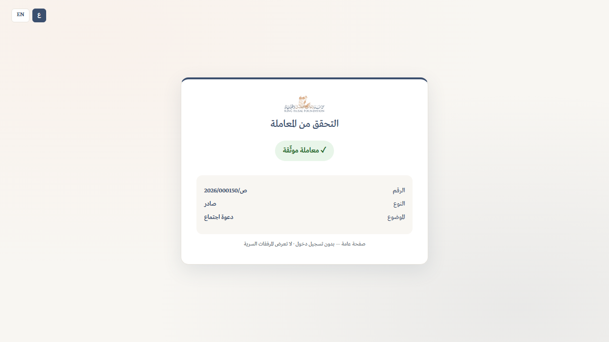
- بمسح رمز QR على الخطاب أو بإدخال الرمز في صفحة التحقق العامة.
- تظهر أصالة المعاملة والرقم والنوع؛ وقد يظهر نص الخطاب أو RSVP للصادر عند التفعيل.
- لا تُعرض المرفقات السرية. المعاملة الملغاة تظهر كملغاة.
صفحة التحقق عامة ولا تتطلب دخول النظام. فيها أيضاً تبديل ع / EN.
28) الملف الشخصي
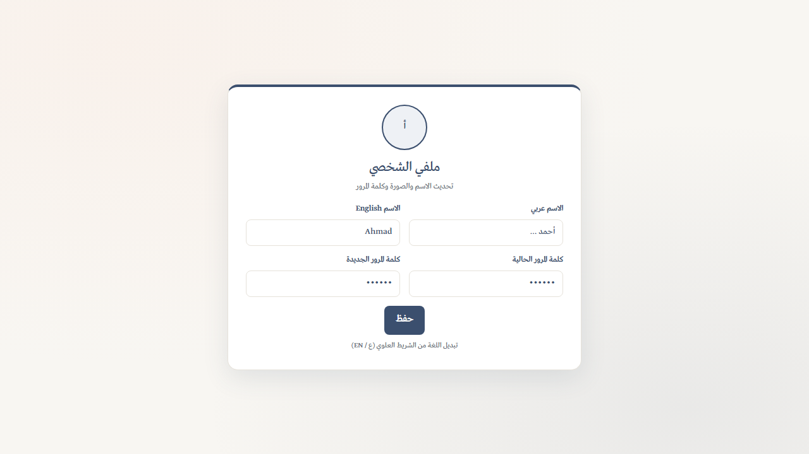
- تحديث الاسم العربي/الإنجليزي والصورة.
- تغيير كلمة المرور (الحالية + الجديدة + التأكيد).
- البريد هو معرف الدخول — لا تغيّره إلا عند الحاجة وبتنسيق صحيح.
- تبديل اللغة من الشريط العلوي وليس من داخل الملف الشخصي.
29) نصائح سريعة
- الدخول بالبريد الإلكتروني فقط.
- لا تشارك كلمة المرور؛ من جهاز مشترك اضغط خروج.
- راجع «يحتاج إجراء» والجرس يومياً (وارد / صادر / داخلي).
- صحّح بيانات الجهة قبل الإرسال أو الصادر الجماعي.
- للتصدير الشامل استخدم التقارير ← Excel.
- لا تُلغِ صادراً إلا بعد التأكد — الإلغاء لا يُراجع والرقم يبقى محجوزاً.
- في ملصق الظرف: ابدأ من الخانة الصحيحة واطبع بورق Letter حسب القالب.
- في الملصق الحراري: اختر مقاس الطابعة المطابق للقالب (50×25 أو 44×22 ملم).
- للمساعدة التقنية أو إعادة الدعوة: تواصل مع مدير النظام.
15) التعليقات والملاحظات
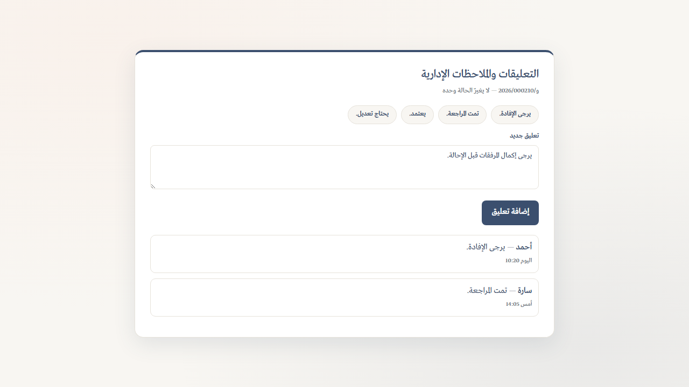
التعليق يوثّق المتابعة ولا يغيّر حالة المعاملة وحده. يلزم صلاحية تعديل معاملات.